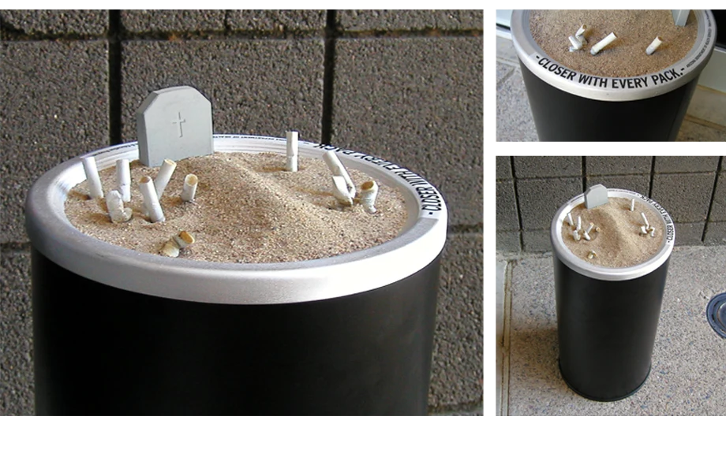
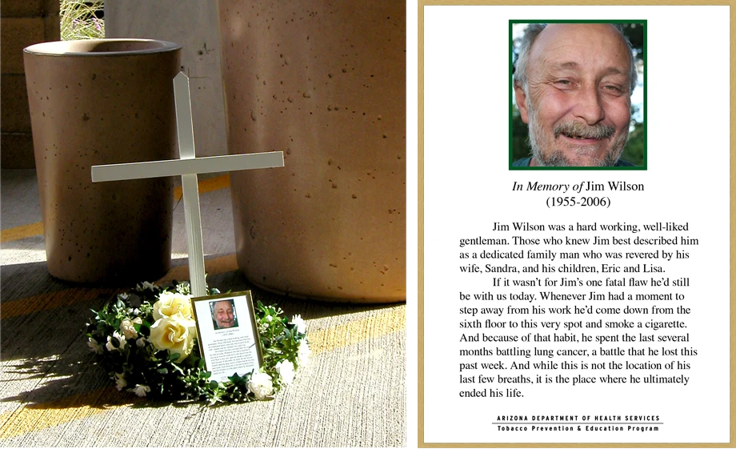

Utilizing alternative media, we targeted smokers where they were practicing the very behavior we wanted to influence.
This was a more cost-effective approach versus traditional paid media, and gave us a chance to make a deeper emotional impact.
Ashcan Graves
Graves were added to preexisting ashcans in high-rise commercial buildings with designated smoking areas.

Smoker's Memorial
Amping up the emotion through more specific targeting, “roadside-style” memorials were created for cancer victims who worked in high-rise buildings. These memorials gave insight into the death of someone who the audience may have recognized as a fellow smoker.

Credits
- AgencyR&R Partners

Next project
No Barriers Reef
Belize Tourism Board